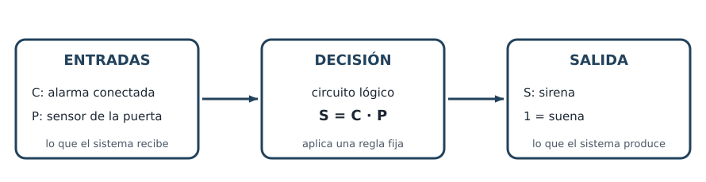

Una alarma que suena solo si está conectada y alguien abre la puerta. Un secador de manos que sopla cuando detecta las manos. Una luz de escalera que se enciende con cualquiera de dos interruptores. Todos estos aparatos toman decisiones: miran lo que pasa y responden siempre con la misma regla.
En esta unidad aprenderás cómo deciden por dentro, usando solo dos valores, el 0 y el 1. No necesitas saber nada de antemano: cada palabra nueva se explica la primera vez que aparece.

El reto final
Al terminar, diseñarás tú solo un circuito que resuelva una situación real: escribirás qué significa cada entrada, apuntarás qué hace el circuito en cada caso, escribirás su regla, lo dibujarás y lo comprobarás en un simulador (un programa que imita el circuito) con todos los casos posibles.
Qué aprenderás
- Distinguir una señal analógica de una digital y decir qué significa el 0 y el 1 en cada caso.
- Pasar números pequeños de decimal a binario y de binario a decimal.
- Reconocer las puertas lógicas por su nombre, su símbolo y su tabla.
- Traducir una situación a tabla, expresión y circuito, y comprobarlo.
Las páginas de la unidad
- 1. Estados y decisiones
- 2. El bit y el binario
- 3. Puertas básicas
- 4. Más puertas
- 5. Del enunciado al circuito
- 6. Circuitos equivalentes
- 7. Simulación y comprobación
- 8. Reto de diseño
- 9. Preparar el examen
- Glosario (material de consulta)
Dónde se entrega cada cosa
| Tarea de Moodle | Cómo se hace | Qué se entrega | ¿Cuenta para la nota? |
|---|---|---|---|
| Prueba binario y puertas | Como un examen: individual, en papel, en clase, sin apuntes ni hoja de referencia (20 minutos), al empezar la sesión siguiente a la de la página 4 | La hoja de la prueba, al terminar. La nota y la corrección comentada aparecen en Moodle. | Sí |
| Retos de lógica | Individual (puedes practicar en pareja) | El reto de diseño en PDF. Las instrucciones están en la página del reto. | Sí |
| Examen · Electrónica digital | Individual, en papel, sin apuntes ni hoja de referencia | La hoja del examen, al terminar. La nota y la devolución aparecen en Moodle. | Sí |
Las actividades de práctica de cada página no cuentan para la nota: sirven para aprender y puedes repetirlas cuantas veces quieras. Cada una tiene su solución explicada debajo, en «Comprueba tu respuesta». Inténtalo primero y ábrela después.
Tu hoja de referencia
Toda la unidad cabe en dos caras: descarga la hoja de referencia (PDF). Úsala para estudiar y repasar; en las pruebas y en el examen no se puede usar.